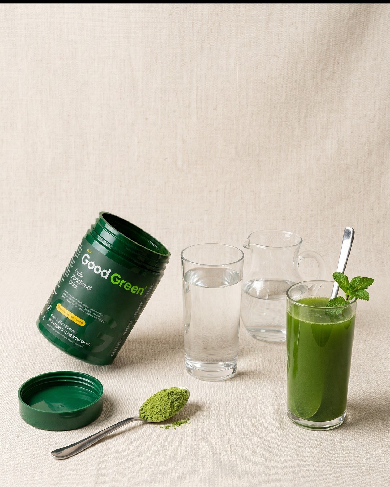
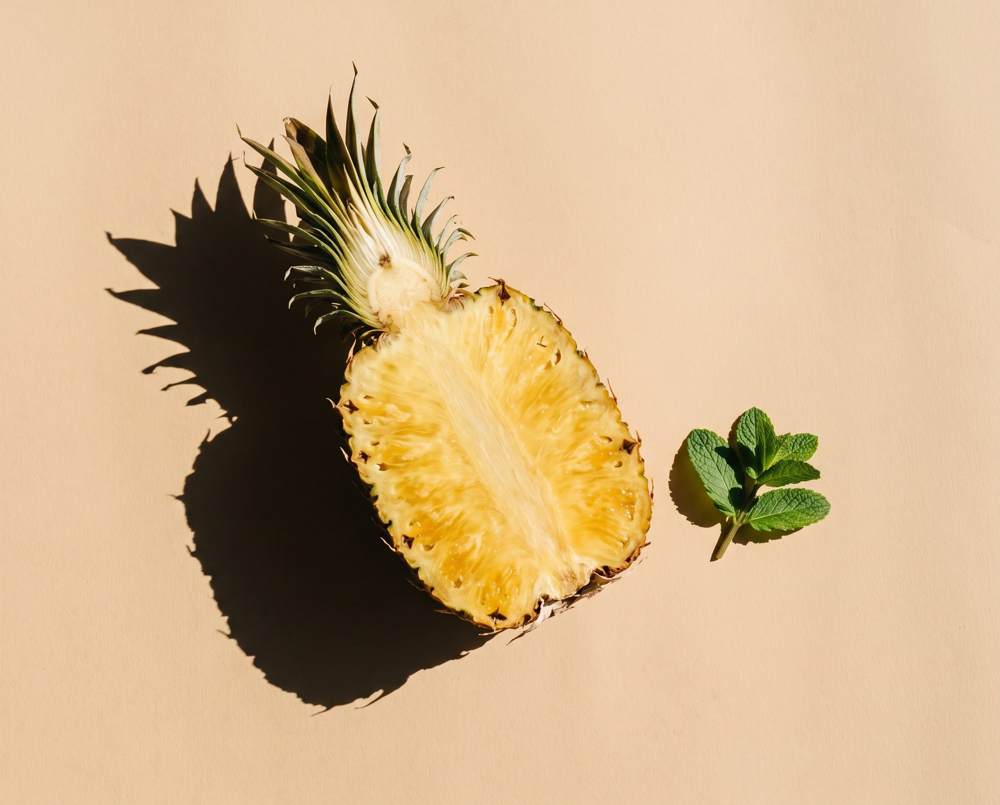

Pronto em 30 segundos
1. Fica pronto em 30 segundos
Nada de lavar couve, descascar, bater e coar. Uma medida (7,5 g) em 300 ml de água, mexe e pronto. O liquidificador continua limpo no armário. Dá para preparar na garrafa, na mesa do trabalho ou no caminho. Sem pia cheia, sem bagaço, sem coador para lavar depois. É o tipo de hábito que sobrevive a uma semana corrida.
 O que tem em cada dose
O que tem em cada dose
2. Vitaminas e minerais numa medida só
Em vez de abrir vários potes de manhã, você toma uma bebida só. Cada dose é rica em vitaminas C, B2, B6 e B12, cromo e zinco, segundo a tabela do rótulo.
Vitamina C45 mg · 45% VD
Vitaminas B6 e B12100% VD
Cromo571% VD
Zinco64% VD

Zero gosto de grama
3. Tem gosto de abacaxi com hortelã, não de grama
O maior medo de quem tenta um verde em pó é o gosto. A base leva couve, espirulina, gengibre e cúrcuma, mas o abacaxi com hortelã aparece primeiro no gole: leve e refrescante. Fica ainda melhor gelado ou com gelo na garrafa.
Tem- Vitaminas C, B2, B6 e B12
- Cromo e zinco
- Couve e espirulina
- Gengibre e cúrcuma
- Cafeína do guaraná
Não tem- ×Glúten
- ×Lactose
- ×Liquidificador para lavar
- ×Couve murchando
4. Tudo o que é bom, nada do que não precisa
Baixo em calorias, zero lactose e não contém glúten, então entra na rotina de quem evita os dois. A cafeína vem do guaraná da fórmula: 75 mg por porção, para acompanhar o seu dia.
5. Cabe em qualquer rotina
Antes do café, na garrafa a caminho do trabalho, na mesa do escritório ou depois do treino. Uma vez ao dia, no horário que for melhor para você.
Pronto para colocar verdes na rotina sem complicar? Troque o liquidificador por uma medida e comece com a garrafa de vidro de brinde.

Em estoque
Garrafa de vidro de brinde no seu primeiro pedido
Na assinatura, enquanto durar o lote de garrafas.
Conteúdo da marca Good Green. Este produto não é um medicamento. Indicado para maiores de 19 anos. Não deve ser consumido por gestantes, lactantes e crianças. Contém cafeína. Produto notificado, dispensado de registro conforme RDC 240/2018.